|
Welcome to The Rhombic Zoo |
| Over the past six hundred years, we have been working very closely with
science to evolve some more efficent animals. Until now, these could only be seen by
our own doctors and Ludwig who helps by feeding all creatures great and small and medium.
We are now so proud of our animals that we feel the time is right to allow the public to
view our work. We hope that once the initial reaction has subsided the public will
understand that we only did it for a laugh. So let me present to you our creations.
Note. All photographs were taken with a camera and the animals all agreed to be
photographed apart from the TurkeyPig who never agrees to anything due to his personality.
No animals suffered in their own making because we evolved them that way. All of
these photographs are real. Welcome indeed to the Rhombic Zoo.
|
Please do not touch the animals.
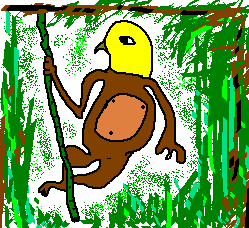 Budgonkey |
We experiment on about 4 billion monkeys a week using various irritants. Bananas are very expensive, so to reduce the cost of feeding we evolved a monkey with the head of a budgie. This has the added bonus of not making the annoying screaming noise that excitable primates often make, but can give you a nasty peck so stand back. |
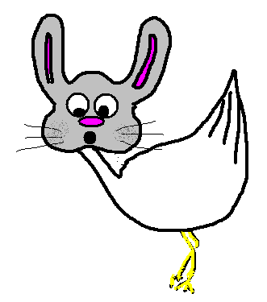 Goobit |
Geese are such unattractive birds that we decided to cross breed one with a rabbit. As you can see all of the children find rabbits much cuter than geese, so this makes an ideal Christmas present. Puppies are also available on request. |
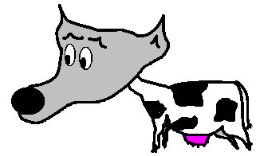 WolfCow |
This has been one of our most successful evolutions. By having three or four of these in a herd of cattle they will deter thoroughbred wolves from mauling your livestock. The Rhombic Farm hac been using W.C.s for many years now, and we have yet to lose a single cow to a predator. They can, howver, be quite noisy so we are currently trying to genetically persuade the WolfCows to keep the noise down please. It barks like this "MooooooooWooWooWooWoo" |
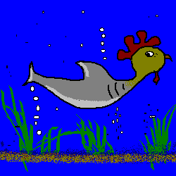 Chark |
Many people enjoy the fear of being chased by deadly sharks but do not like being ripped to pieces at the end. For this reason we merged a chicken and a shark so that if you do get caught you will only suffer minor injuries. The Rhombic Farm is, however, currently being ruled by the most savage chicken ever. |
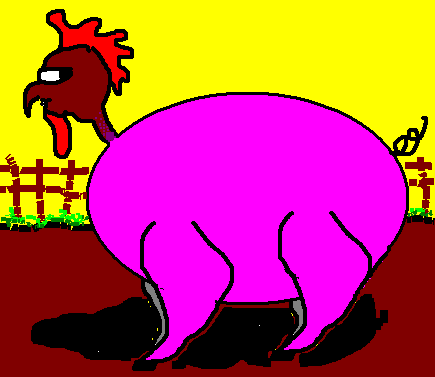 TurkeyPig |
We made this for a laugh and as a result TurkeyPig is disgruntled. We were only able to evolve one of these because we couldn't stop laughing. He now scowls at us from the Rhombic Farmyard, which makes us laugh even louder. |
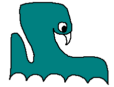 SabreToothed Octopus |
BEWARE: This creature is very dangerous. It could have your eye out. Take care near the cage for those tentacles are longer than they look. |
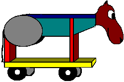 SkateHorse |
That is a real horse's head grafted onto a skateboard by our skilled animal carpenter Doctor Sawdust Mafia-Meld. It is much easier to learn to ride one of these than a complete horse. We are currently developing high traction wheels for use at the seaside. |
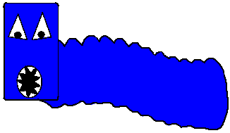 Squareheadbluecaterpiller |
By evolving this creature in a matchbox, we were able to induce a square head. This has the added advantage of being able to fit more snugly into corners, thus increasing the C.S.F. (Caterpillars per Square Foot) quotient. |
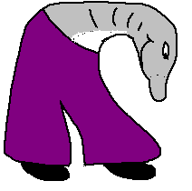 Dolphlares |
It was decided that current dolphins were not fashionable enough and that to represent the full range of marine life they should take into account the chic designs of the early Nineteen-Seventies. Hunmnn (the dolphin) is wearing flares attached by our genetic engineer and seamstress Doctor Diana Nucleic-Acrylic. Look how happy she is. |
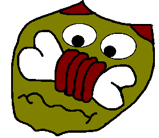 FlatCatMeatBoneNose |
By flattening the head of a standard cat, we were able to engineer a nose that is perceived as some meat on the bone. It is currently illegal for us to sell this cat in the UK, so we have approached some flat-cat farmers in New Zealand with a view to completely replacing their farming industry. They have agreed. |
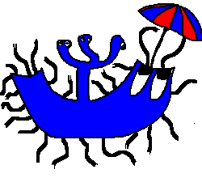 Meep |
This was the first of our Functional Insects (F.I.s). As you can see, not only did we take the time to protect the creature from unexpected precipitation, but there are also a number of periscope-heads that can keep a look out for fearsome cloud formations. |
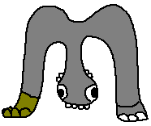 Ellionoob |
Constructed from two elephant legs, this is the first of our more daring ventures into genetic manipulation. The Ellionoob feeds by rotating the three jaws of its hanging head at a velocity of upto 600 revolutions per minute. It also has the ability to play compact discs. Due to its size (the Ellionoob is over four days tall) it is expected that the demand will be greater than that for our DoubleGiraffe, so we are busily engineering a herd of these. |
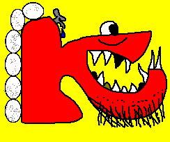 Gruffer |
The first of our new species, the Gruffer carries large eggs on its back. Its teeth are sharp but many are rotten due to its diet of pure plaque. It is a grazing animal and enjoys the company of humans. It is safe to let the Gruffer eat from your teeth. |
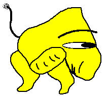 Smam |
This is our most angular animal to date. The Smam is a harmless herbivour that only eats hemp plants. It is slower than a sloth. Please do not feed this animal with crisps or strawberry Nesquick. If it gets a taste for them then no shop will be safe in nine years time when it gets there. |
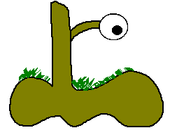 BooTree |
By growing an eyeball onto a tree and allowing the roots to form into the shape of a boot, we believe we have created the worlds first hopping tree. Since it is entirely mobile it doesn't need to be planted. In fact, planting a Bootree will result in prosecution under the Environmental Footwear Act of 1458. Please do not climb the Bootree. If it moves you could get lost in the woods. Safety breadcrumbs are available at reception if you really can't resist. |
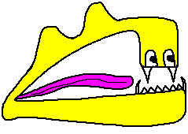 H.A.M.M. |
Hamm (Nickname "FourSprungDutchTechnique") is our first attempt at breeding office stationary, cutlery and yellow. It combines the sprung technique of a stapler, four sharp teeth of a knife and the yellow colouring from Dutch daffodils. Do not feed. |
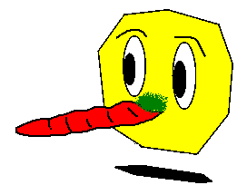 9sidedshapewithacarrotforanose |
This is our first flirtation with the world of genetically modified polygon-vegetables. |
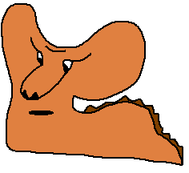 Darb |
The Darb is our most furrowed animal. It consumes four hundred litres of four star leaded petrol a week. Obviously our environmental commitment will necessitate having the animal fitted with some form of catalytic converter, but we haven't yet worked out what the f**k it is. |
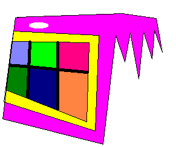 The H0RSE |
We have also finally tracked down our very first hybrid H.O.R.S.E. To create this fine specimin, we used NNA (Neo Nucleic Artichokes) from the great Horace himself. H.O.R.S.E. stands for grooming. |
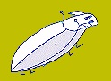 NeegleBeegle |
One of the enigmatic n-parasites living amongst the beard of the HORSE is this NeegleBeegle. Without a doubt the most precariously balanced predatory 5 legged nano-creature known to nan. And she knows a lot, I tell you. |